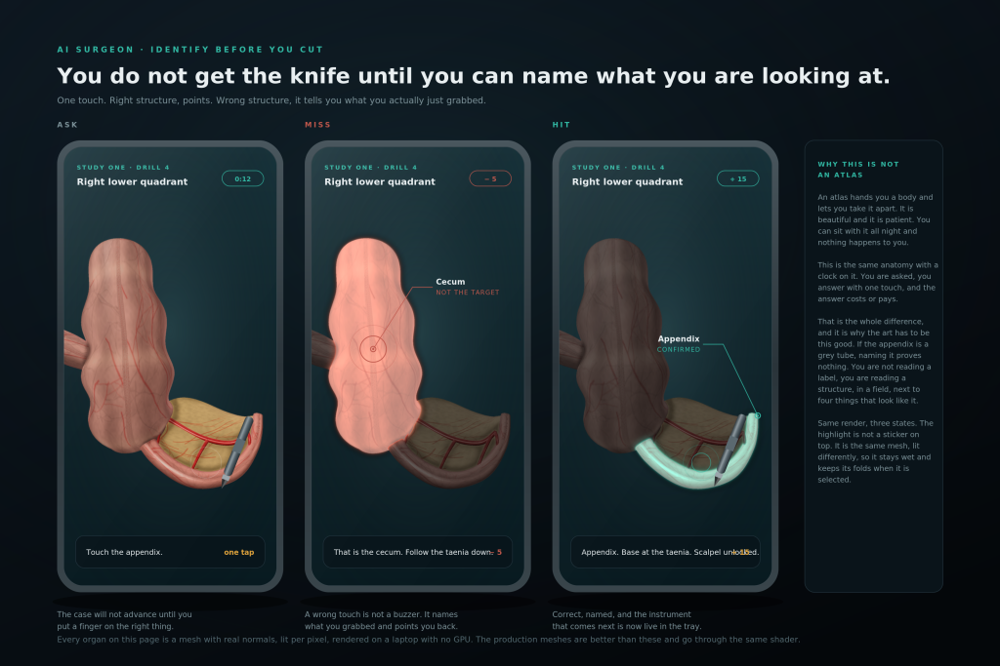
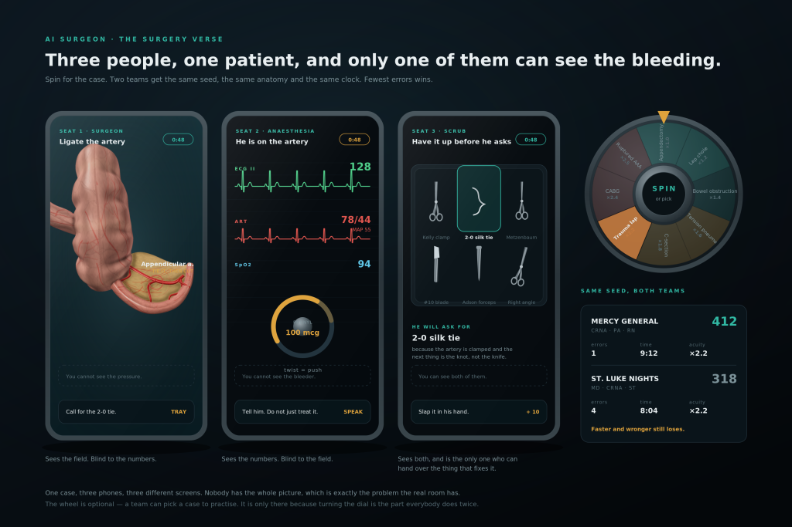
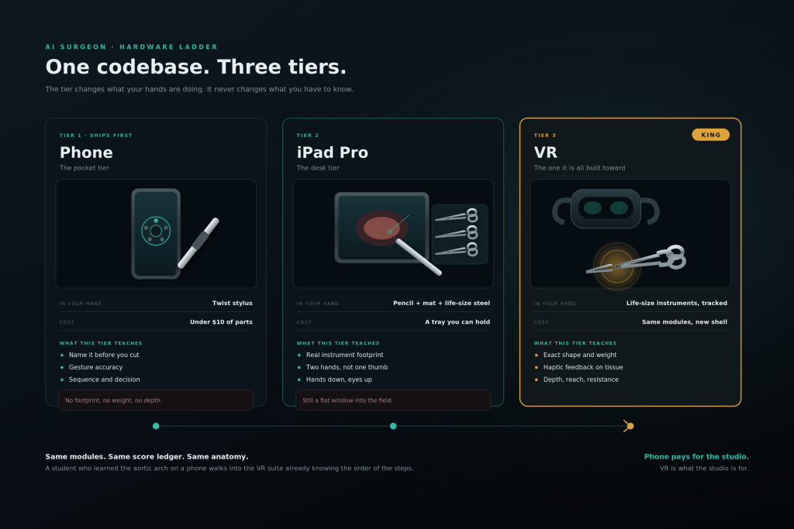

Identify before you cut. Twist to choose, touch to commit. Study one, see one,
do one, teach one — with the study put back in front of the knife, where it belongs.
Surgery and anaesthesia are two seats of the same case, not two products, and not a second
world. Teaching is worth the most points, because it is the only phase that proves you
understood it.
Medical big picture · theirs
Identify before you cut. The Pen is the instrument — one object: knife, clamp, retractor.
Cases, physiology, trauma, anaesthesia, coherence — death-enabled from trauma onward.
This is what the playable product is.
Harrison’s · Lady of the Lake
Mythic authority that gives the sword from the water. Lake and mist are atmosphere on this
hub, not a fantasy reskin of the OR. No Harrison’s quotations are invented here.
ExplorationAnything goes. Zero penalty. Skip the Lab if you
want. Coherence still watches how you move — it cannot dock you. Fun is the point.
CurriculumIt counts. You must study in the Lab first.
Then See One → Do One. Clock, score, and coherence matter. High stakes.
Everyone is trying to win. Scores high enough can read as medical education.
Completely benign — program it any way you want.
HonestSoftware cannot make a phone stylus feel like a Kelly
clamp. The Pen is the language. Until the custom pen exists, Apple Pencil Pro
is all of the instruments on iPad — one object. iPhone has no Pencil. Spec:
APPLE-PENCIL.md. Toggle
the mode on pen.html.
The field
Phone first. Then a tablet on a mat. VR is the same build on a headset. Two modules are open:
open appendectomy, and tube thoracostomy under a live monitor. Phone stills (identify, lab,
verse, anatomy) use the scanned-mesh PNGs — they do not replace those modules.

Identify before you cut
ASK, MISS, HIT. Wrong touch names what you grabbed. Right touch unlocks the knife.
Cite strip — sources named in the 2025 cited plan, not measured on this desk:
Market Research Future (2024); HolonIQ (2024); Stanford University Study (2023);
Harvard Medical School (2023); Newzoo (2024); U.S. Department of Education (2024);
Bloomberg Technology (2024).
Full list, the 37% laparoscopic caution, and the do-not-invent-papers rule:
CITATIONS.
Clinical content and design: Jonathan Simons, CRNA.
Not a medical device. Not a clinical reference. Not a substitute for
supervised surgical training. No store checkout on this hub — schools, hospital systems, and
STEM grants are who the plans say pay; the phone modules are what ships first.
Phone stills · August 2026 visual spec
Same app. Twist to choose, touch to commit. Real stills in identify / lab / verse / anatomy.
Full Module 12 and Module 21 stay where they are.
Knots · Suturing · Sterile Technique · The Tray · Local Blocks
No patient, no acuity, no monitor. Drills. This is where the gesture vocabulary
and the Bluetooth instruments get taught, and where the scrub-tech naming drill lives — every
case above gets better if this one is good.
Felon. The fibrous septa that make the pulp a compartment, the digital
neurovascular bundles at two-and-ten and four-and-eight, and the flexor sheath you are hoping is
not involved. Small anatomy, real stakes, one sharp learnable error.
Acuity ×1.0Pitch · not playablePatient loss disabled
Calot’s triangle. Fulcrum effect and working off a screen are a separate
skills-lab strand — you cannot learn lap surgery by doing open surgery faster. Not built.
Pitch · not playableBrochure ladder 03
Module 14Pitch
Inguinal Hernia
Named on the brochure ladder after the gallbladder. Pitch and still only —
no fake case behind this card.
Pitch · not playableBrochure ladder 04
Module 15Pitch
Bowel Anastomosis
Named next on that same ladder. Not authored as steps, tray, or scoring yet.
Sixty seconds of anatomy and a lifetime of consequence. The module where you and
the head of the bed are working the same airway at the same time — two seats, one case.
Pitch · not playableTwo seats
Module 24Pitch
Damage Control Laparotomy
Four quadrants packed, bleeding controlled, contamination stopped, abdomen left
open. The hardest thing to teach here is stopping early.
Pitch · not playable
Year 5 — chief
Module 41Pitch
Cardiac — CABG
Where the points are. Also where they are taken away fastest. Top of the
brochure ladder with neuro. Not a playable case.
Pitch · not playable
Module 43Pitch
Neurosurgery — Craniotomy
Top of the ladder. Highest multiplier in the game, and the only module where
a single wrong structure ends the case outright. Pitch only.
Pitch · not playable
Parallel track — the head of the bed
Anaesthesia trackPitch
Blame Anesthesia
A second ladder running alongside the surgical one. Airway, induction
pharmacology, the machine, neuraxial, and the crises — laryngospasm, MH, anaphylaxis, LAST. Named
for the oldest joke in the operating room, which stops being funny somewhere around the third
module. Trauma already has an AI voice at the head of the bed; this track is not a second game.
Robed · faceless · does not walkPitch · not playableTwo seats, one case
Playable chromeThe stills player at
screens.html is the same product on a
phone frame — not a second app. Open
#identify,
#lab,
#verse,
#anesthesia.
It does not replace the 3D appendectomy or the live-monitor trauma module.
Surgery Verse — two seats, one case

Three seats, one patient
Surgeon sees the field. Anaesthesia sees the numbers. Scrub hands over the thing that fixes it.
Not a worldThe 2025 Claude note said deliver the plan and
leave the metaverse out. Surgery Verse here is a seat name, not a second universe
to raise against. Surgery and anaesthesia are two seats of the same case, not two products.
Two seatsSurgery and anaesthesia are two seats of the same case,
not two products. Locked seats: surgeon, anaesthesia, scrub. Same
seed, same clock. Pitch on this hub; the phone stills page is the Verse mock. Playable
HTML today is still single-seat with an AI attending.
Same caseHead-to-head is the same seed, separate runs: errors first,
time second. Speed winning outright would teach people to rush.
Hardware ladder

One codebase. Three tiers.
The tier changes what your hands are doing. It never changes what you have to know.
PhoneWhat ships first. Browser, no install, on a device the player
already owns. Both open modules run here. The Pen is min-movement plus vision — not a
requirement for VR or a mat of steel toys.
Tablet + matLarger field and optional Bluetooth instrument replicas
(the 2025 plan’s haptic toolkit / BlueTools). Life-size steel lives here, later, and never
required. The Pen on the phone does not pretend to be that steel.
VRThe same codebase on a headset (WebXR). A later phase of this
build, not a separate AAA title.
Who pays · what ships first
Who paysSchools, nursing programs, hospital systems, and STEM
grants fund prizes and licenses. Advertisers may fund rewards. The 2025 plan also lists
hardware, institutional subscriptions, and optional coaching tiers. This hub has no checkout.
Ships firstThe phone residency loop — study / see / do / teach —
with a handful of modules. Not pre-orders, not a store, not scholarships issued from this
page.
How it is scored
Study one10 points a card. You cannot be handed an instrument until
the anatomy and physiology cards are done.
See one5 points a step. The attending demonstrates; you name the
structures while you watch.
Do one25 points a step. You identify the structure, call the
scrub for the instrument by name, then perform the maneuver by gesture.
Twist to choose, click the top to commit, squeeze to clamp — then swipe, spread, pinch, or hold
still work as the glass fallback, and only after the name lands.
Teach one40 points a step — the most in the game. A junior asks you
why, and you have to be right. The real Teach One — supervising a junior with a two-second
interrupt window — is specified and not yet this multiple-choice placeholder.
AcuityMultiplies rewards and penalties. Routine ×1.0 through
septic ×2.5. Trauma runs at ×2.0.
CoherenceWatches how right you are and how long you hesitate, then
moves the game. High coherence removes hints, tightens gesture tolerance, and speeds the
patient's deterioration up. Load is a second axis: accurate and overloaded is held, not pushed.
The monitorYou are responsible for noticing. A drifting pressure or a
falling end-tidal that you do not call out is a scored error even if the surgery was
perfect. Calling the wrong thing costs a little — crying wolf has a price in a real room too.
AskingQuestions go both ways. You can ask the attending what you are
looking at, why this instrument, or what happens if you are wrong here. Asking costs a little and
is worth more than guessing silently.
HandoverPatient safety is number one. Handing over inside the window
is worth more than staying and getting away with it. The button is visible in every Do One phase.
Losing the patientVoids the case and costs rank. Disabled in entry
modules. Enabled from trauma onward. Death-enabled is a teaching rule, not a gore setting.
Author path on the Mac:
/Users/jonathansimons/Downloads/8098483949091603692 2.MP4
Searched workspace, uploads, and assets for *.mp4 / *.MP4 /
*.webm. Nothing to mount. This slot waits for that file.
Footage is not invented.
About / Credits
The gameAI Surgeon. Clinical training game from Simons Medical
Innovations, LLC. Not ChatVault, not Domain Architect, not RH, not NS.
Medical big pictureTheirs. Identify before you cut. The Pen is the
one instrument. Cases, physiology, trauma, anaesthesia, coherence — death-enabled from trauma
onward. This is what the playable product is.
THEIRS ·
The Pen.
Harrison’sThe Lady of the Lake. Mythic authority that gives the
sword from the water. Lake and mist are atmosphere, not a fantasy reskin of the OR. No
Harrison’s quotations are invented here.
Harrison’s.
The houseChronogate · The Field Journal ·
Prime Field Technologies. Full lock on
credits.html.
The markCG reticle (cyan C, gold G) sits small in the chrome.
Wordmark stays on About/Credits. Not a cleared medical device.


{kind=link}
{kind=link}
{kind=link}
{kind=link}
{kind=link}